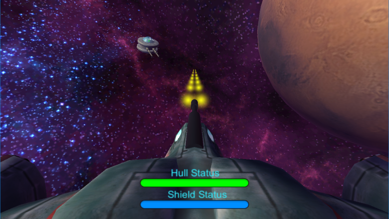
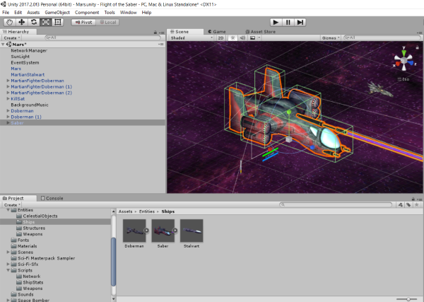

And we're ... done? (12/04/2017)

The past two weeks have flown by. The project came together quickly, broke and was fixed a few times but all the parts are working at this point! The "game" has basic functionality in that you can log in, fly around in three dimensions and shoot down fighter craft. I even added in a basic AI for the KillSat turrets near Mars. Right now they simply turn to face whatever enters their detection range until it leaves, then they search for a new target. I've noticed that they also turn to "look at" the player's Proton Cannon shells as they fly by. Something to work on.
This project is definitely going to be a work in progress for a while because I have to focus on Web development in the near future but I'll come back to Flight of the Rubicon at some point.
Unity is Amazing (11/22/2017)

I've only been working with the Unity engine for a couple of days but I already have models moving around the screen via keyboard commands. It turns out the documentation is great and there are helpful tutorials for many, many aspects of game development.
I've also managed to get the "skybox" (or "starbox" since it's a space sim) working now. I found a program called Spacescape that takes a starfield image and splits it into the six sides of a cube. Granted, it's not a perfect solution because a cube isn't a sphere but with the timeframe of this project I'm not going to be picky. Thank you, Alex Peterson, for making Spacescape!
I've noticed that Unity uses a very modular, OOP style setup where each in-game object has scripts attached to it so that they can be reused in other parts of the game or even other games entirely. I'm pretty impressed.
Project Planning (11/01/2017)
My next project is coming up at the end of the week and I need to begin planning. I know I want to do a 3d game but this time I'm on my own. It's going to be a challenge.
My initial thought was to design a space-themed game. I've been watching Star Trek: Next Generation on Netflix lately and it made me realize there aren't a lot of (if any) voice-activated spaceship bridge simulations. So let's do this: the player takes the role of a captain on a large ship, not an interceptor. The crew handles maneuvering, weapons targeting, shields, etc. while the captain requests these actions.
Sample Command List:
"Helm, plot a course to [Asteroid 02]"
"Tactical, battle stations"
"Comms, hail [Neutral Ship 05]"
At the Foot of the Hill (10/26/2017)
In the aftermath of my first game project, Firewall Penitentiary, I'm left with a number of lessons regarding development:
First, I realize I should have handled all of the synchronization physics (players killed, ball drops, projectile locations, etc.) on the Server side of the game. The reason I didn't was due to the fact that F.P. was developed first as a single player game and then, once that version was stable, was upgraded to a multiplayer version. The timeframe for the project was two weeks and I was handling technologies I'd never used before, including Socket.io and the Phaser Game Engine, so I wasn't even sure what was possible. (As a note, I love Phaser and would definitely use it again on 2d projects with Javascript. It's strongly supported by a great community who have run into just about every bug out there.)
Second, as team lead I should have delegated more but, due to the timeframe, I handled more and delegated less. Why? My team was assigned to me and I had no idea of their skills or experience before we began. I had to just assign tasks and hope people could keep up. I started off small, asking team members to research how to perform certain actions with the Phaser Engine and used their results as a way to gauge what their next task should be. I kept up this process throughout the project while I worked on the more complex algorithms.
As it turned out, none of them had game development experience but they gave it their all anyway. We held regular meetings and there were several midnight stress tests I'll remember for years to come. Regardless of how we got there, we were there and our first game was done.